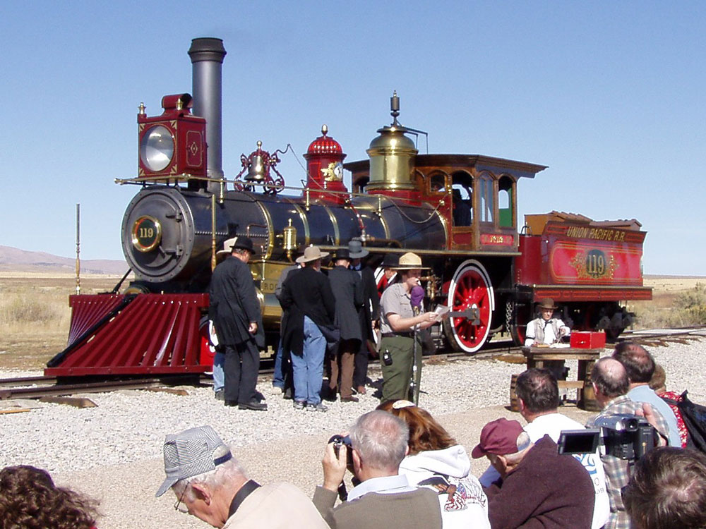
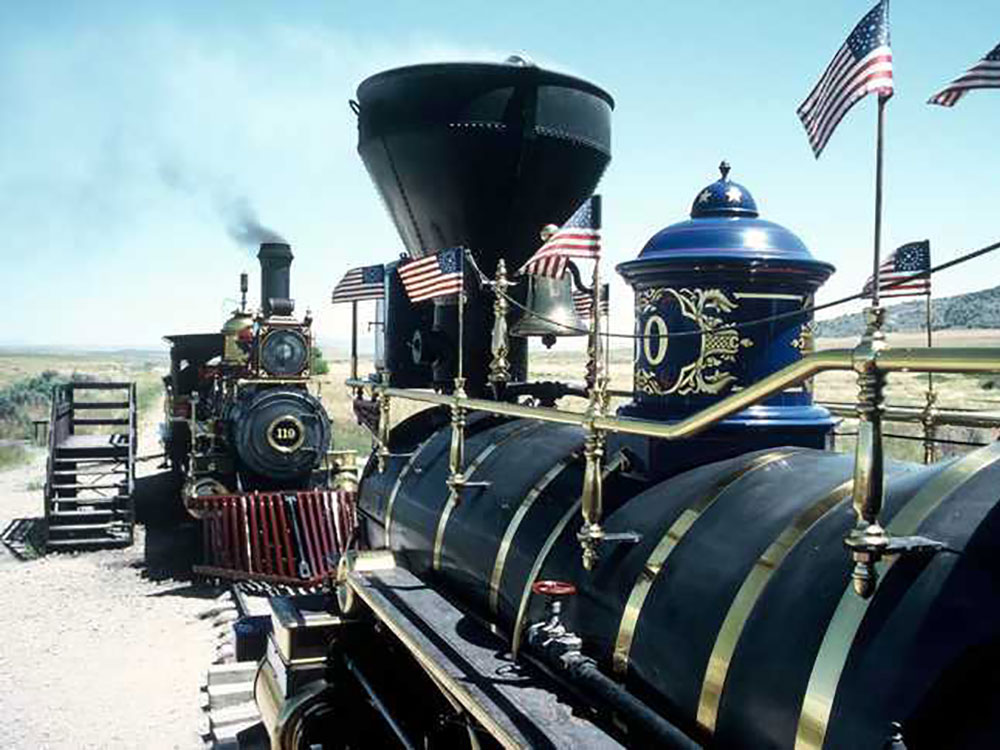
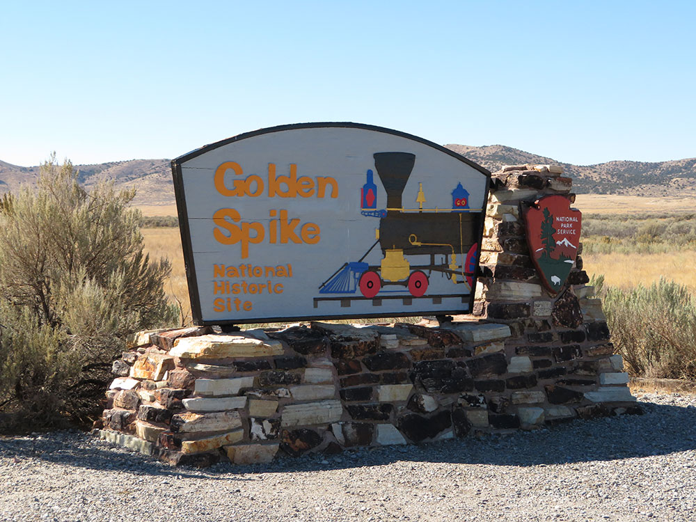
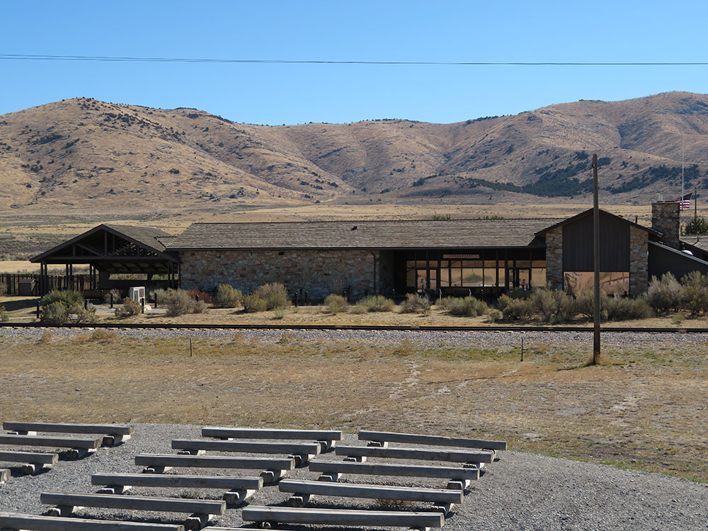
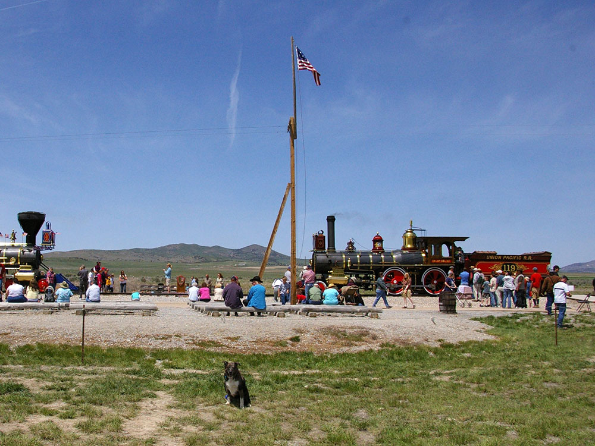

.jpg){kind=link}
Park commemorates the completion of the first Transcontinental Railroad where the Central Pacific Railroad and the first Union Pacific Railroad met on May 10, 1869
General Information
Outside exhibits: Open daily during daylight hours
Motorcycle: $15 (covers driver and one passenger)
Individual (on foot or bicycle): $10
Youth 15 and under: Free
Annual Park Pass: $35
How to Get There
From Salt Lake City (83 mi): Take I-15 N to exit 365 for UT-13 N/UT-83 N toward Corinne/Promontory; follow UT-83 N for 29 miles, then turn left at the Golden Spike sign and continue 7.5 miles to the park entrance.
Overview
Golden Spike National Historical Park at Promontory Summit, north of the Great Salt Lake in Box Elder County, marks the spot where the Central Pacific and Union Pacific railroads met on May 10, 1869, completing the first transcontinental railroad. The site was first designated a national historic site in 1957, was expanded to its current 2,735 acres by 1980, and was redesignated a national historical park by Congress in 2019. Visitors come to see the exhibits and film at the visitor center, the ceremony reenactments, and the two full-size replica steam locomotives, Jupiter and No. 119, which operate on the track on a seasonal schedule. Beyond the ceremony site, the park preserves miles of the original railroad grade, with the hand-built cuts and fills that can be explored on foot or by car.
Access
The park sits in a quiet, rural part of Box Elder County at Promontory Summit, about 23 miles west of Corinne and roughly 83 miles north of Salt Lake City. Most visitors take I-15 north to the Brigham City area, then follow Utah Highway 83 west and signs to the park, with the last miles on a paved road. Fuel, food and other services are not available within roughly 27 miles of the park, and cell service is limited, so plan ahead. The access road is generally open year-round, but snow and ice can make the grade hazardous and staff may close it temporarily, so check current conditions before driving in winter.
Seasons
Late spring through early fall is the busiest time, when the weather is mild and the replica locomotives run their demonstrations. The anniversary celebration is held each year on May 10, and the park hosts additional special events during the year, so expect larger crowds around those dates. Summers are warm and dry with little shade on the open grade, while winters are cold, windy and quiet, and snow can limit access to the auto tour routes. The visitor center and exhibits stay open year-round, though locomotives do not run in the cold months and the center keeps a reduced winter schedule. Spring and fall are comfortable for walking the railroad grades and have the best chance of clear light across the surrounding sagebrush hills.
Highlights
- Auto tours: two drives on the original rail grade, the East Auto Tour Route and West Auto Tour Route, with cuts and fills built by hand
- Annual event: the anniversary celebration is held on May 10
Things to Do
Visit the Site Where America Was Linked by Rail
Golden Spike National Historical Park preserves the location where the First Transcontinental Railroad was completed on May 10, 1869. At Promontory Summit in northern Utah, the Union Pacific and Central Pacific railroads met, creating a transportation link that transformed travel, commerce, and settlement across the United States.
Watch Historic Locomotive Demonstrations
One of the park's most popular attractions is the operation of full-scale replicas of the historic Jupiter and No. 119 steam locomotives. Visitors can watch demonstrations and reenactments that bring the story of the Transcontinental Railroad to life while learning about nineteenth-century railroad technology.
Explore the Visitor Center and Museum Exhibits
The visitor center features exhibits detailing the construction of the railroad, the engineering challenges faced by workers, and the social and economic impacts of connecting the nation by rail. Interactive displays, artifacts, photographs, and educational programs provide insight into this pivotal moment in American history.
Walk Along the Historic Rail Grade
Visitors can follow portions of the original railroad grade and view remnants of the Transcontinental Railroad. Interpretive signs throughout the park explain construction methods, railroad operations, and the contributions of thousands of laborers, including Irish and Chinese workers.
Drive the Auto Tour Route
The park's scenic driving route passes historic railroad features, former construction camps, and interpretive stops across the landscape surrounding Promontory Summit. Visitors can explore the broad desert valley where one of America's most important transportation projects was completed.
Experience Wide-Open Landscapes and Wildlife Viewing
Golden Spike National Historical Park offers expansive views of the Great Basin landscape, including rolling hills, grasslands, and distant mountain ranges. Visitors may observe pronghorn, coyotes, raptors, and other wildlife while exploring the historic site.
Top Trails
Big Fill Walk
Length: Approximately 1 mile round trip
Elevation Gain: Minimal
Difficulty: Easy
This short walk leads visitors to one of the most impressive engineering features of the original railroad route. The massive earthworks known as the Big Fill demonstrate the scale of labor required to complete the Transcontinental Railroad across challenging terrain.
Promontory Auto Tour Stops
Length: Varies by route
Elevation Gain: Minimal
Difficulty: Easy
Although primarily explored by vehicle, the interpretive stops throughout the auto tour route offer short walks to historic railroad grades, monuments, and viewpoints that highlight important locations associated with railroad construction.
Golden Spike Ceremony Grounds Walk
Length: Approximately 0.5 miles round trip
Elevation Gain: Minimal
Difficulty: Easy
This accessible walk allows visitors to explore the location where the ceremonial Golden Spike was driven. Interpretive exhibits and monument markers help visitors understand the significance of the event and its lasting impact on the nation.
East and West Grade Exploration Routes
Length: Various distances
Elevation Gain: Minimal to Moderate
Difficulty: Easy to Moderate
Several informal walking opportunities allow visitors to follow surviving sections of the railroad grade east and west of Promontory Summit. These routes provide a closer look at the engineering and geography associated with construction of the nation's first transcontinental rail line.
Visitor Centers
The park’s single visitor center, near the ceremony site at Promontory Summit, was built in 1969 and is the starting point for any visit. It shows a film about the transcontinental railroad, has exhibits on the people and events behind the Golden Spike ceremony, and is where rangers can explain the day’s locomotive demonstrations and auto tour routes. The NPS lists it as open daily from early May to late October and Thursday through Monday in winter, closed on Thanksgiving, Christmas and New Year’s Day. Pets are not allowed inside.
Camping and Lodging
There is no lodging or developed campground in the park, and no services for many miles, so most visitors treat it as a day trip. The closest motels are in Brigham City, about 32 miles away, which has the nearest hotels and restaurants. Logan and Tremonton are within about an hour’s drive, and Ogden and Salt Lake City offer the widest selection within roughly 1.5 to 2 hours. Bring food and water, since only limited shelter is available in the park.
This article uses material from the Wikipedia article and official pages for nps.gov, Golden Spike National Historical Park, released under the Creative Commons Attribution-Share-Alike License 3.0. Additional information from National Park Service.




.jpg){kind=link}

.jpg){kind=link}
